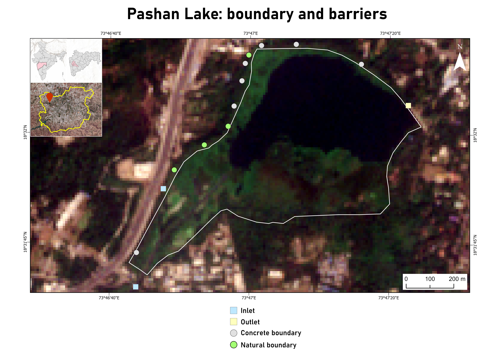

Group project
Geospatial and ecological assessment for restoration planning of Pashan Lake, Pune
Research question
• How has the spatial distribution of water hyacinth (Eichhornia crassipes) in Pashan Lake changed over the past decade, and what are the implications for biodiversity and ecosystem health in Pashan Lake?
• How have land use land cover patterns around Pashan Lake changed over the past decade, and how do urbanization, inlet pollution, and other observed anthropogenic pressures influence the identification of priority areas for restoration planning?
Introduction
Pashan Lake is an artificial lake in located in Pune, Maharashtra, which has, since its creation in 1868, become
an important wetland habitat for both resident and migratory birds. The lake is
situated within a rapidly developing suburban landscape characterised by residential
settlements, road networks, institutional areas, and recreational spaces. Its location within
the Ramnadi drainage system establishes an important hydrological connection between the
lake, its upstream catchment and the downstream Mula River system.
This research project aims to assess
the ecological condition of Pashan Lake over the past decade using satellite-derived NDVI
and NDWI indices and on-ground vegetation measurements. It also examines anthropogenic
pressures through LULC change analysis and investigates the lake’s
inlets, outlets and potential sources of pollution, with the goal of identifying key factors
contributing to lake degradation and informing restoration strategies. Field techniques in the
study include random vegetation sampling to study ecological community metrics, boundaries
and spatial barrier mapping, and identification of sources of pollution.

Methodology
-
Data collection
Cloud free Level-2A Sentinel-2 images from the post-monsoon period were used for analysis. Sentinel-2 was chosen for its high spatial resolution and multispectral capabilities.
-
Land use and land cover classification
The imagery was classified into four land cover categories: water, vegetation, built-up land and barren land, using a supervised classification algorithm (Random Forest)in Google Earth Engine.
-
Spectral indices
NDVI and NDWI were calculated to assess vegetation health and water extent, respectively.
-
Fieldwork
Vegetation sampling with line and belt transects to calculate ecological community metrics: six line transects were run to collect data on native and invasive plant species, and two belt transects were used to assess the density of invasive weeds around the lake's shoreline.

Results
[Describe the main land use and land cover changes across the years.]

[Describe vegetation and water trends, and anything the fieldwork showed that the imagery did not.]
Conclusion
[Answer the research question directly in two or three sentences.]
[Recommendations for restoration planning that follow from your results.]
[Limitations (resolution, cloud cover, limited field samples) and what you would do next.]